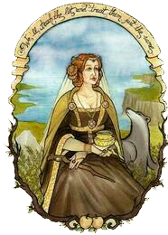
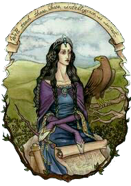

Gryffindor is one of the four houses at Hogwarts, which is famous for its courage, courage and determination. Gryffindor students usually show strength of character and are ready to take on challenges, stand up for truth and justice.
Hufflepuff is one of the four houses at Hogwarts, which is famous for its friendliness, patience and devotion. Hufflepuff students usually show concern for others, have a good heart and are ready to help those in need.Slytherin is one of the four houses at Hogwarts, which is famous for its cunning, ambition and determination.
Slytherin is one of the four houses at Hogwarts, which is famous for its cunning, ambition and determination. Slytherin students tend to be shrewd and have a desire for power and success.
Ravenclaw is one of the four houses at Hogwarts, which is famous for its wisdom, intelligence and curiosity. Ravenclaw students are usually sharp-witted and strive for knowledge and understanding of the world around them.
